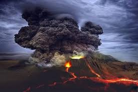
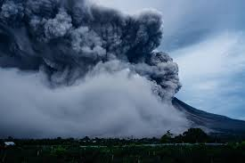

Letusan Dahsyat Gunung Semeru Mengguncang Lumajang
Dipublikasikan: 27 November 2025
Gunung Semeru kembali menunjukkan aktivitas vulkaniknya dengan letusan besar yang menyebabkan kolom abu mencapai ketinggian beberapa kilometer ke langit. Warga di sekitar Kecamatan Pronojiwo dan sekitarnya diminta untuk tetap waspada dan mengikuti arahan dari petugas BPBD setempat.
Menurut laporan sementara, letusan terjadi pada pukul 15.20 WIB yang disertai dengan guguran awan panas mengarah ke sektor tenggara. Petugas gabungan telah melakukan evakuasi terhadap warga yang tinggal di zona merah demi keselamatan.
Sampai saat ini, aktivitas vulkanik terus dipantau secara ketat. Para relawan, TNI, Polri, beserta tim SAR telah turun ke lokasi untuk memastikan proses evakuasi berjalan dengan aman. Sementara itu, debu vulkanik telah mencapai beberapa desa di Lumajang dan sekitarnya, menyebabkan jarak pandang menurun.
Warga diimbau untuk menggunakan masker dan kacamata pelindung saat beraktivitas di luar ruangan. Pemerintah daerah juga telah menyiapkan posko darurat bagi warga yang terdampak langsung dari erupsi ini.
- Status: **Waspada**
- Radius bahaya: **5 km**
- Evakuasi: **Sedang berlangsung**
- Petugas gabungan telah disiagakan